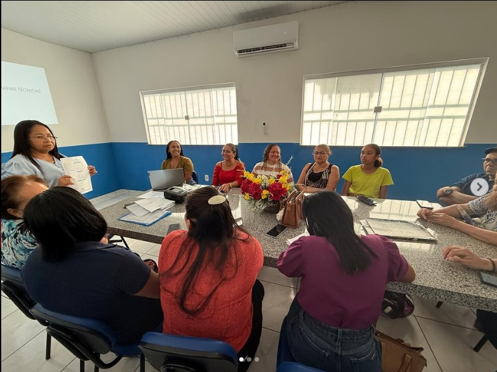

Data: 09 de julho de 2025
Horário: 08:00 - 12:00
Descrição
Na manhã do dia 09/07/2025, o Conselho Municipal de Educação se reuniu em caráter ordinário para composição das Câmaras Técnicas e Comissões Especiais para tratar de temas específicos junto ao Sistema Municipal de Ensino.
Registro Fotográfico
Conclusão
Na manhã do dia 09/07/2025, o Conselho Municipal de Educação se reuniu em caráter ordinário para composição das Câmaras Técnicas e Comissões Especiais para tratar de temas específicos junto ao Sistema Municipal de Ensino.